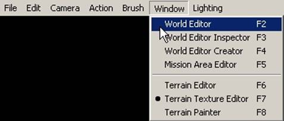
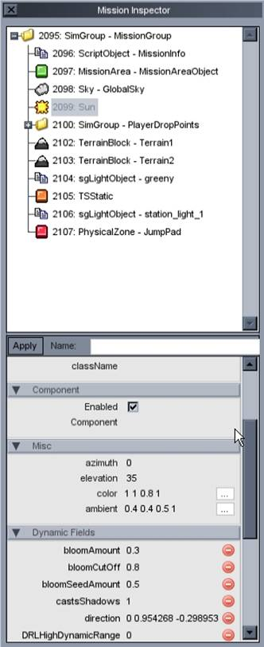

|
Mission Editor Overview
The Torque Mission Editor is a set of eight tools
which allow you to perform a wide variety of tasks, such as place and manipulate
objects, create and modify terrain and lighting settings, set up path's and
other triggered events. To put it in simplest terms, the mission editor is
where you'll be creating the world in which your game takes place in Push F11 to open the mission editor. Once the mission editor is open,
you have access to the following tools. World Editor (F2) World Editor Inspector (F3) World Editor Creator (F4) Mission Area Editor (F5) Terrain Editor (F6) Terrain Texture Editor (F7) Terrain Texture Painter (F8) This list may be succinct, but the true range of
possibilities these tools provide will be demonstrated in the following
tutorials. Before we get into how to use them, though, it's useful to have some
general Mission Editor information under your belt. The World Editor provides a traditional menu bar
along the top edge for selecting the current tool as well as other features.
This functions exactly as it would in any other program.  In addition to the menu bar, the mission editor
utilizes a tool window which is used to display specific options for the
active mission editor tool.  By default, the camera is attached to the player
when you start a mission. While this is useful for playing/testing your game,
it's not useful for mission editing. To be able to create your world with the
greatest ease, you need to be able to move in all directions, instead of just
along the terrain. This brings us to the camera options. Following the descriptions of the camera
options is a screenshot displaying the menu. Free Look / Player View Toggle (Alt+C) Player view is the standard first person view you
have when looking through the eyes of a player model Free Look Camera Speed (Camera Menu > Slowest -
Fastest) Drop Character at Camera Position (Shift+F7) Drop Camera at Character Position (Shift+F8)
Once you place an object in your level, you will
want to adjust its orientation and position to fit your design. The Mission
Editor provides multiple camera angles, grid alignment, a multi-function “gizmo”,
and other extensions for your editing needs. Object Selection Once you’ve
selected your object, you will want to move your camera close enough so that
you can see what you are doing. In our
example, shown below, we have placed a StaticShape object using the Elf
model. In the following image, the
object is not selected. However, when
you hover your mouse over the object, the bounding box will display letting
you know you can select it.
The Gizmo Click on
your object. Your object’s bounding
box will now change to a yellow color, signifying your selection. Also, the Mission Editor Gizmo has popped
up in the center/origin of your object.
The Gizmo consists of 3 arrows radiating out in the 3 standard
coordinate directions/axis: (X,Y,Z).
Translate/Move If you
grab one of the arrows and drag it in a direction, your object’s location
will adjust according to which arrow you pick. In the image found below, we have selected
the (Z) axis, which means our object will move directly up. Alternatively, you can select the bounding
box of the object and free move it in two of the three axis. Rotation You can toggle
the rotation Gizmo pressing the [ALT] key before you manipulate your object. You’ll notice that the Gizmo arrows have
turned into circles. Now, when you
click and drag an axis (we’ve selected the Y-axis here), your object will
rotate along around the axis. Scaling You can toggle
the scale Gizmo pressing the [CTRL] and [ALT] keys at the same time. You’ll notice that the Gizmo arrows have
turned into boxes. Move your mouse
over one of the bounding box sides until it is shaded blue, as shown
below. Click on the side and drag it
away from your object. In our example,
we have grabbed the bounding box that corresponds to the X-axis. Once dragged outward, our object becomes much
wider. Snapping and Grid Viewing Below, you
can see a screen shot showing we have changed the camera from “Perspective”
to “Top” by click on the drop down box in the top left corner of the
editor. We have also clicked and
toggled the “Grid” and “Snap” options by clicking their buttons in the middle
of the editor bar. You can tell they
are toggled by their light grey color. What we
are manipulating is a large DTS shape representing a base. If you wish for your buildings align to
specific locations on the map, say a road or designated building zone, using
the overhead grid and snapping features.
When snapping is turned on, the objects origin will immediately move
to the nearest grid point. You can see
the building’s origin by looking for the blue dot (which is actually the Gizmo’s
Z-axis arrow shown from above). We’ve
placed a red square representing the next grid point below the building’s
origin. Note – The red square does not actually show in the Mission
Editor. It was added during image
editing. To
demonstrate what happens to an object that is moved with the grid and
snapping turned on, we’ve provided a screenshot below. We clicked on the Y-axis of the Gizmo and
dragged the building down. Following
the origin, the entire base snapped to the next grid point which is found
under the red square. That's it! You're ready to start building your own environment. When you're ready, continue on to the next lesson, Making Your Own Terrain.
|